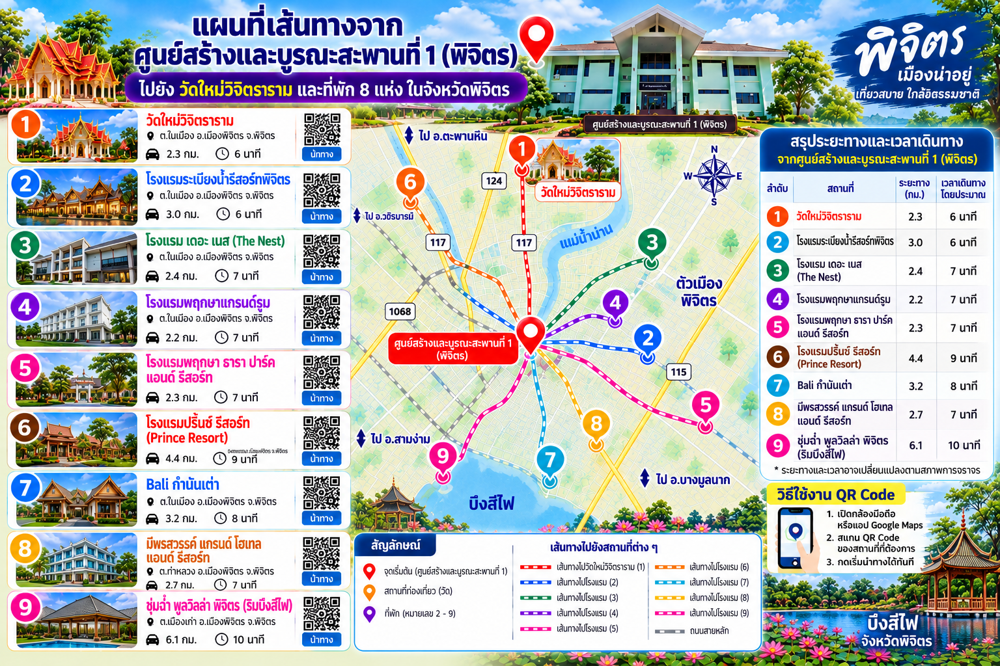

วิธีใช้งาน: เลือกสถานที่ด้านล่าง แล้วกด นำทาง เพื่อเปิด Google Maps โดยกำหนดจุดเริ่มต้นเป็นศูนย์สร้างและบูรณะสะพานที่ 1 (พิจิตร) โดยอัตโนมัติ
หมายเหตุ: ระยะทางและเวลาในภาพอินโฟกราฟิกเป็นตัวเลขที่ยังไม่ได้ยืนยัน โปรดดูเส้นทางจริงจาก Google Maps
หมายเหตุ: ระยะทางและเวลาในภาพอินโฟกราฟิกเป็นตัวเลขที่ยังไม่ได้ยืนยัน โปรดดูเส้นทางจริงจาก Google Maps